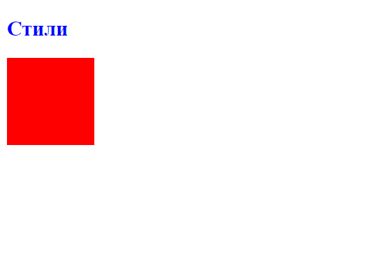

Введение в стили
Любой html-документ, сколько бы он элементов не содержал, будет по сути "мертвым" без использования стилей. Стили или лучше сказать каскадные таблицы стилей (Cascading Style Sheets) или попросту CSS определяют представление документа, его внешний вид. Рассмотрим вкратце применение стилей в контексте HTML5.
Стиль в CSS представляет правило, которое указывает веб-браузеру, как надо форматировать элемент. Форматирование может включать установку цвета фона элемента, установку цвета и типа шрифта и так далее.
Определение стиля состоит из двух частей: селектор, который указывает на элемент, и блок объявления стиля - набор команд, которые устанавливают правила форматирования. Например:
div{
background-color:red;
width: 100px;
height: 60px;
}
В данном случае селектором является div. Этот селектор указывает, что этот стиль будет применяться ко всем элементам div.
После селектора в фигурных скобках идет блок объявления стиля. Между открывающей и закрывающей фигурными скобками определяются команды, указывающие, как форматировать элемент.
Каждая команда состоит из свойства и значения. Так, в следующем выражении:
background-color:red;
background-color представляет свойство, а red - значение. Свойство определяет конкретный стиль. Свойств css существует множество. Например, background-color определяет цвет фона. После двоеточия идет значение для этого свойства. Например, выше указанная команда определяет для свойства background-color значение red. Иными словами, для фона элемента устанавливается цвет "red", то есть красный.
После каждой команды ставится точка с запятой, которая отделяет данную команду от других.
Наборы таких стилей часто называют таблицами стилей или CSS (Cascading Style Sheets или каскадные таблицы стилей). Существуют различные способы определения стилей.
Атрибут style
Первый способ заключается во встраивании стилей непосредственно в элемент с помощью атрибута style:
<!DOCTYPE html>
<html>
<head>
<meta charset="utf-8">
<title>Стили </title>
</head>
<body>
<h2 style="color:blue;">Стили</h2>
<div style="width: 100px; height: 100px; background-color: red;"></div>
</body>
</html>

Здесь определены два элемента - заголовок h2 и блок div. У заголовка определен синий цвет текста с помощью свойства color. У блока div определены свойства ширины (width), высоты (height), а также цвета фона (background-color).
Второй способ состоит в использования элемента style в документе html. Этот элемент сообщает браузеру, что данные внутри являются кодом css, а не html:
<!DOCTYPE html>
<html>
<head>
<meta charset="utf-8">
<title>Стили</title>
<style>
h2{
color:blue;
}
div{
width: 100px;
height: 100px;
background-color: red;
}
</style>
</head>
<body>
<h2>Стили</h2>
<div></div>
</body>
</html>
Результат в данном случае будет абсолютно тем же, что и в предыдущем случае.
Часто элемент style определяется внутри элемента head, однако может также использоваться в других частях HTML-документа. Элемент style содержит наборы стилей. У каждого стиля указывается вначале селектор, после чего в фигурных скобках идет все те же определения свойств css и их значения, что были использованы в предыдущем примере.
Второй способ делает код html чище за счет вынесения стилей в элемент style. Но также есть и третий способ, который заключается в вынесении стилей во внешний файл.
Создадим в одной папке с html странице текстовый файл, который переименуем в styles.css и определим в нем следующее содержимое:
h2{
color:blue;
}
div{
width: 100px;
height: 100px;
background-color: red;
}
Это те же стили, что были внутри элемента style. И также изменим код html-страницы:
<!DOCTYPE html>
<html>
<head>
<meta charset="utf-8">
<title>Стили</title>
<link rel="stylesheet" type="text/css" href="styles.css"/>
</head>
<body>
<h2>Стили</h2>
<div</div>
</body>
</html>
Здесь уже нет элемента style, зато есть элемент link, который подключает выше созданный файл styles.css: <link rel="stylesheet" type="text/css" href="styles.css"/>/p>
Таким образом, определяя стили во внешнем файле, мы делаем код html чище, структура страницы отделяется от ее стилизации. При таком определении стили гораздо легче модифицировать, чем если бы они были определены внутри элементов или в элементе style, и такой способ является предпочтительным в HTML5.
А в файле style.css определен следующий стиль:
div{
width:50px;
height:50px;
background-color:red;
}
В данном случае в трех местах для элемента div определено свойство width, причем с разным значением. Какое значение будет применяться к элементу в итоге? Здесь у нас действует следующая система приоритетов:
- Если у элемента определены встроенные стили (inline-стили), то они имеют высший приоритет, то есть в примере выше итоговой шириной будет 120 пикселей
- Далее в порядке приоритета идут стили, которые определены в элементе style
- Наименее приоритетными стилями являются те, которые определены во внешнем файле.
Атрибуты html и стили css
Многие элементы html позволяют устанавливать стили отображения с помощью атрибутов. Например, у ряда элементов мы можем применять атрибуты width и height для установки ширины и высоты элемента соответственно. Однако подобного подхода следует избегать и вместо встроенных атрибутов следует применять стили CSS. Важно четко понимать, что разметка HTML должна предоставлять только структуру html-документа, а весь его внешний вид, стилизацию должны определять стили CSS.
Валидация кода CSS
В процессе написания стилей CSS могут возникать вопросы, а правильно ли так определять стили, корректны ли они. И в этом случае мы можем воспользоваться валидатором css, который доступен по адресу http://jigsaw.w3.org/css-validator/.